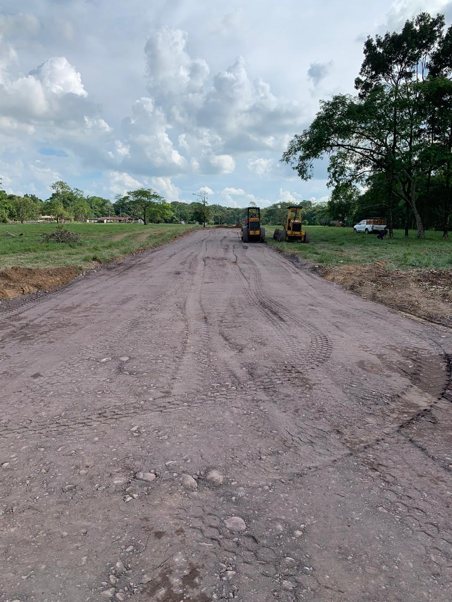
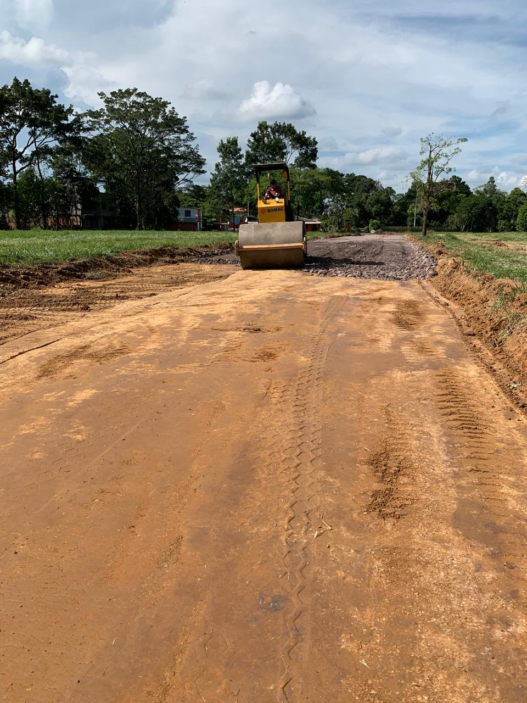
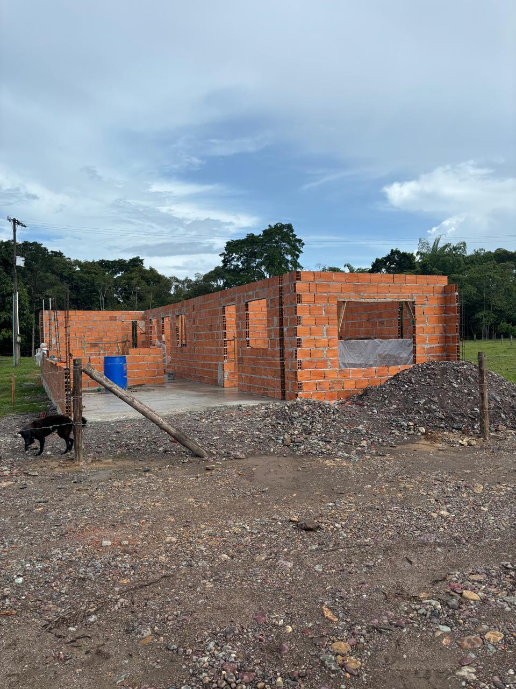
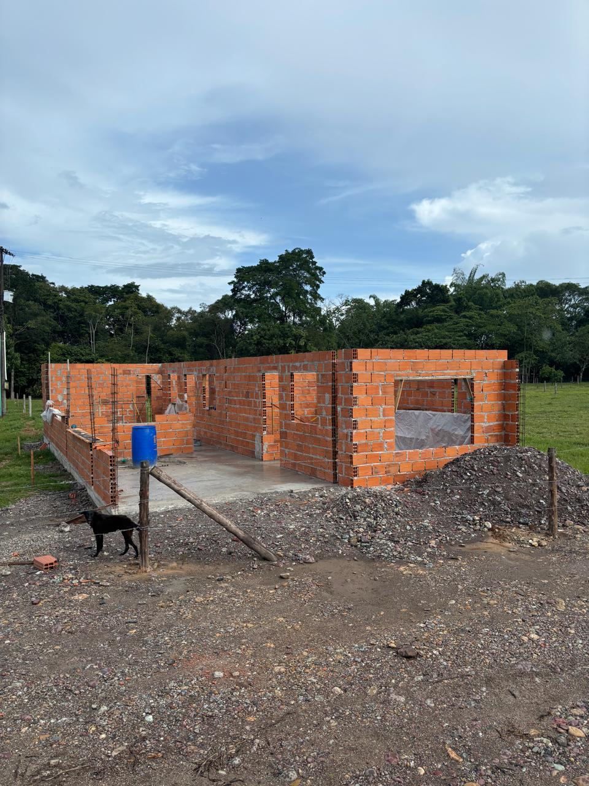
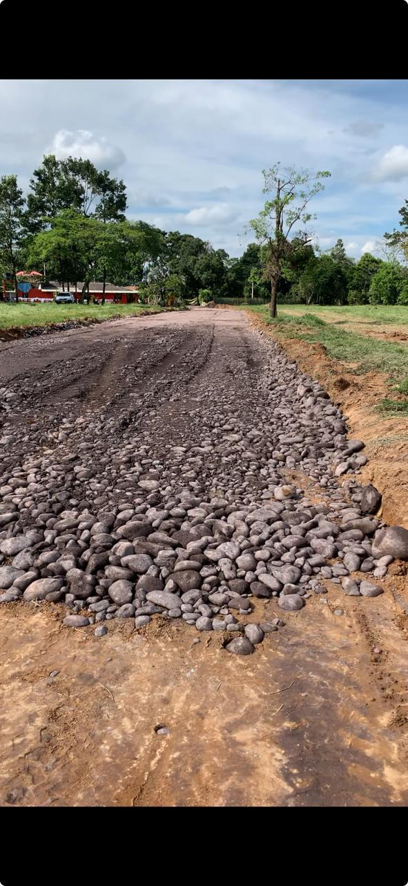
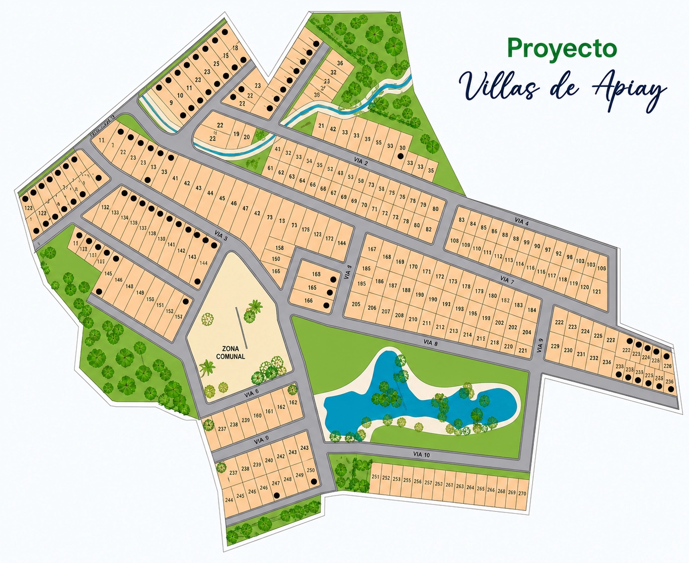

Apiay · Villavicencio · Meta
Villas de Apiay
Infraestructura en marcha: vías compactadas, maquinaria en obra y portales de acceso. La etapa temprana, donde el valor apenas comienza.
Resumen ejecutivo
El momento de mayor recorrido.
Villas de Apiay está en su etapa temprana: movimiento de tierra, vías compactándose y portales de acceso en construcción. Se ve la obra avanzar.
Entrar aquí es entrar en el punto donde el precio es más bajo y el recorrido de valorización, más largo. El riesgo de la etapa temprana, con su recompensa.
Galería
Fotografías del proyecto y su entorno. Material de referencia.





Masterplan

El proyecto que se está trazando.
Distribución general del loteo, vías internas y accesos en desarrollo. El plano definitivo, con áreas exactas y disponibilidad por lote, se comparte en la asesoría.
Características
Obra real, avanzando a la vista.
Maquinaria trabajando las vías internas del proyecto.
Portales de ingreso a la parcelación en construcción.
Redes eléctricas contempladas para las etapas siguientes.
Nivelación y bases de piedra para vías y plataformas.
El valor más bajo del portafolio por estar en etapa temprana.
Compra con acompañamiento jurídico hasta la escrituración.
Por qué invertir
Entrar cuando apenas comienza.
01
Precio de entrada
El valor más bajo del portafolio. La etapa temprana es donde el recorrido de valorización es más largo.
02
Obra que avanza
No es un plano en papel: hay maquinaria, vías compactándose y portales levantándose. El avance es verificable.
03
Cerca de Villavicencio
En Apiay, dentro del área de influencia de la capital del Meta y su crecimiento hacia el sur.
04
Lotes amplios
Hasta 1.200 m²: espacio para proyectar con calma una casa de campo a futuro.
Proceso de compra
Un proceso claro, sin letra pequeña.
01
Conversación inicial
Nos cuentas qué buscas. Te compartimos disponibilidad, precios y proyección — con discreción.
02
Visita guiada
Recorremos el proyecto contigo, lote a lote, para que elijas con los pies en la tierra.
03
Reserva del lote
Apartas tu lote con un acuerdo claro. Definimos plan de pago a tu medida.
04
Escrituración
Formalizamos la compra con acompañamiento jurídico de principio a fin.
Ubicación
Apiay, al sur de Villavicencio.
En el corregimiento de Apiay, dentro del área de influencia de Villavicencio. Distancias de referencia (demo):
Mapa interactivo · pendiente de coordenadas reales
Preguntas frecuentes
Lo que suelen preguntarnos.
Solicita información de este proyecto.
Te compartimos disponibilidad, precios y proyección de valorización — con discreción y sin compromiso.
Respondemos con discreción · Sin compromiso